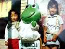
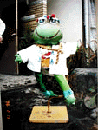
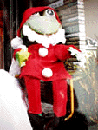
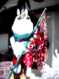
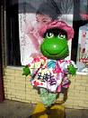
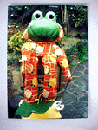
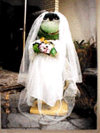
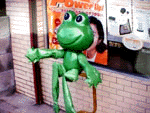

→右にどんどんスクロールしましょー(笑)、極悪ページの見本となるべく作成しています。だれかたれこんでくれないかなー。自分で申し込んでみようかな。横に長いって素晴らしいことですよね。縦スクロールとか、ちょっとださいよねー。だいたいがさー中国人か日本人がコンピュータ開発していたら、標準は、縦書き右から左スクロールだったはずだしな。これくらいの苦労はみんなでしようぜ
このページを快適に見るためには、最低でも３８型ワイド画面なディスプレイをお奨めします。仕事の片手間に上司の目を盗んでお読みいただくために、ブラウザを上下スクロールしなくて済むように、たまには、横長なスクロールをお楽しみいただけるように注意して作りました。なおこのページは、HTML 3.0 でデザインしているふりをしています。Netscape3.0以外のブラウザでは情報が欠落する場合がありますが、じつのところ良く分かりません。 Designed by HTML 3.0. Please browse with Netscape3.0, or you may miss out on some information .
|
こ こ か ら 始 ま り 右 に ス ク ロ | ル し よ う |
カエルミッキー
カエルの母の会心作がこれです。やっぱー会心作だけあって、インパクトは最も強烈だよね。耳のところをどうつけよう。。。いろいろ悩んだのかな。カエルの母は『ミッキーマウスとケロちゃんカエルには、本質的な共通点が多い』その心理的な直感を形にしただけでもすごいよね。 |
晴れ着カエル
平成九年の正月は、晴れ着を着ていました。カツラはカエルの母の私物。着物は娘さんの子供の頃のですが、着付けが大変だったらしい。なにしろ、カエルの母がコスプレしているケロちゃん二型は、胴体が極端に小さくて、下には看板はかせるための、金具がついているので、既製品の衣装を着せるのがたいへんなのだ。 |
コスプレ元年カエル 最初に着せたのがこれ。まだ昭和四〇年代で、カエルくんもぴっかぴかだ。そばにいるのは近所の子供で、今はもう立派な大人に成長してるよね |
博多祇園山笠カエル やはり、博多のカエルは、この姿をしていないとね。夏は山笠、締め込み姿も粋でしょう。 |
クリスマスカエル サンタクロースにだってなってしまう。緑の肉体に赤い服はけっこうよく似合うよね。 |
カパプーカエル カパプー、カパプー、スッタカタッタッター！！って歌を知っているかな。福岡市民ならだれでも知っているぞ。カパプーは、平成七年に開催された福岡ユニバーシアードのマスコットキャラクターです。カエルくんも、この時期は、カパプーになりきっていたんだね。 |
新着カエル これは最新作。つまり平成九年三月二十三日のものだ。これは、店頭の装飾用垂れ幕で作成したものなのだ。桜の花があしらっていて、リサイクルとは思えないさわやかな作品だ。 |
スキーカエル カエルは冬は冬眠するものなのだが、カエルの母にかかってしまうと、冬は防寒具つけてスキーだ。なかなかおしゃれなウエアではないか。メスカエルにももてもてだろう。 |
花嫁カエル 女装もだいじょうぶだ。すてきなウエディング姿ではないか。いつでもお嫁に行けるぞ。手には花束を持っているし。素敵だなー。 |
ヌードカエル これこそ、ケロちゃん二型は、でかい顔に、ちっちゃな胴体、短い手足、という制約がある。しかも鉄製のハンガーがついているために、とってもコスプレしにくいのが難点だ。カエルの母は、この難点を、手足を長くすることで改造した。これで、どんな服でも似合うようになったのだ。そうして、今年は顔面の部分が破損してしまったので、補修した上に、塗装をし直した。ぴっかぴかだ。 |
カエルの母！
私でなくて、カエルを写してね。。と、あくまでも控えめなカエルの母です。ああー次回作はいったいどんなファッションなんでしょう。薬局商売のかたわらで、こんな楽しいことをしている、カエルの母に、ファンレターを出そう。息子さんがインターネットやっているそうなので、今度、メールのアドレスきいてくるね。 |
このページは、極悪ページ応募作品のため、戻る、がありません。各自ブラウザの戻るを使って、戻っておくれー(笑)